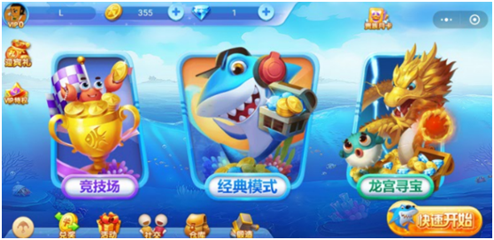
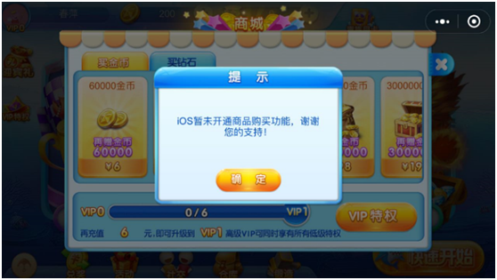
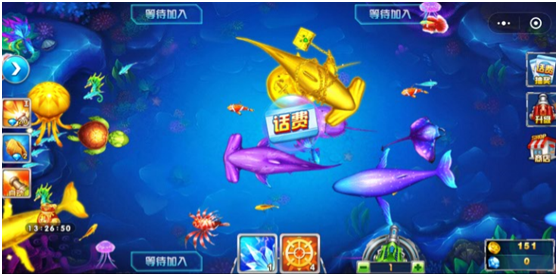

纹桃在昨天的文章中介绍到微信小游戏已经开放第三方游戏上架。对于棋牌领域来说，除了腾讯自研的几款以外，途游上线了《富豪斗地主》《途游中国象棋》两款棋牌类游戏，不过这两款游戏从运营模式来看，对广大运营商的参考价值并不大。今天我们介绍的主角就不一样了，这是一款真正运营级别的第三方小游戏——《途游捕鱼》。

途游捕鱼游戏界面
据纹桃了解到的消息，途游至少在2017年下半年就已经准备布局腾讯小游戏领域。2017年12月，途游共获取了两款捕鱼的游戏版号。一款《途游捕鱼》，一款是《途游休闲捕鱼》。
首先从美术风格来说，《途游捕鱼》这款产品是毫不逊色另一款腾讯旗下的《幸运捕鱼》的。整体游戏功能也和市面上大部分捕鱼游戏APP没有太多区别。
《途游捕鱼》采用金币和钻石双货币模式，不过与腾讯系棋牌游戏的货币体系不同的是，《途游捕鱼》的金币和钻石并没有直接关联，是两种功能完全不同的货币体系。钻石用来购买游戏道具，如升级炮台，购买技能卡等。金币则是用于游戏中的捕鱼炮弹消耗。简单来说：想变强？充钻石。想继续玩我的游戏？充金币。
双货币体系能最大程度激励用户消费
《途游捕鱼》暂时只开放了安卓端的充值，直接对接微信支付，IOS版本腾讯尚在和苹果谈判，用户是无法进行充值的。游戏拥有经典、竞技场、龙宫寻宝三种模式，其中竞技场需要解锁100倍炮台才能玩，龙宫寻宝模式则暂未开放。

IOS暂未开放商品购买功能
值得一提的是《途游捕鱼》的用户激励运营模式。激励方式共有两种，一种是玩家在游戏过程中会随机出现话费券，打爆话费券即可获得等额显示的话费券奖励。玩家使用话费券可以兑换话费卡、京东卡、钻石等。

游戏中出现的话费券
另一种是，玩家可使用钻石购买道具“召唤卡”，使用后可马上召唤一只奖金鱼。玩家打爆奖金鱼后，奖金金币的10%会累计到奖池中去。奖池累计到一定额度，可触发抽奖，玩家可抽取话费券、钻石、金币及其他游戏道具。说到底就形成了：消耗钻石——消耗金币——获取话费券的一个经济闭环。
奖池金额达到一定程度可抽奖
另外，从小编的游戏体验来看，为了照顾新玩家，低倍场捕鱼难度很低，而随着高倍炮台的解锁，游戏难度会越来越大。总而言之，《途游捕鱼》作为在微信小程序上线的第一款第三方电玩类网络游戏，表现还是非常不错的。各运营商可以以这款游戏为参考，做后续产品布局。纹桃科技致力于棋牌游戏开发14年，拥有大量棋牌游戏开发运营经验和大批成功案例。
想开发一款迅速盈利的棋牌游戏，欢迎咨询热线电话：18711739336


游戏产品
PRODUCTS

售后服务
SERVICE

技术支持
TECHNOLOGY

运营指导
OPERATING